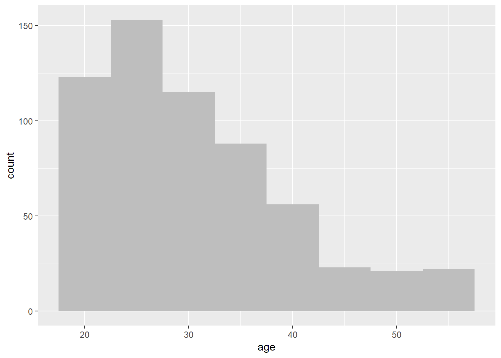
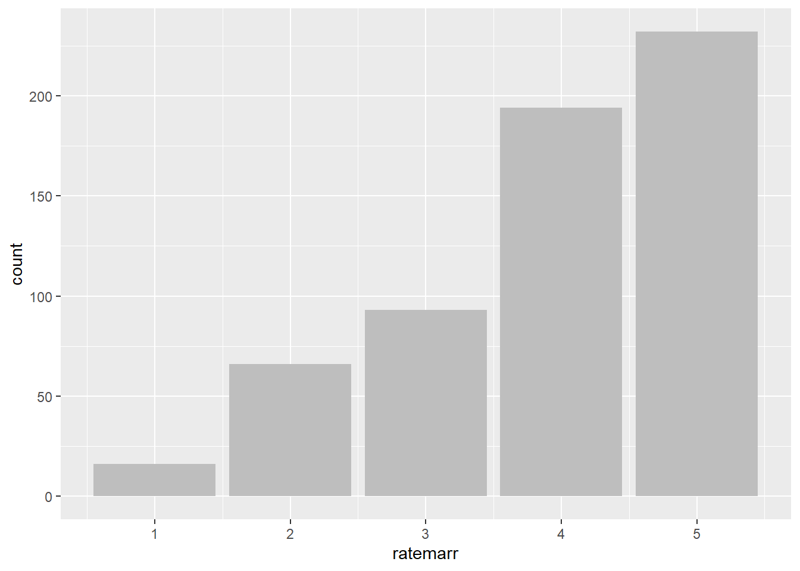

Practical Data Science With R. Chapter 3
Chapter 3: Exploring Data
In this chapter, we will cover the basics of how one should use summary statistics to explore data, use simple data visualization to find problems and discuss how to address those problems.
Any data set typically contains a lot of missing values or even worse, incorrect data, due to various reasons. The first step always should be to get to know your data by exploring each variable.
For this chapter, let’s use data set affairs from package wooldridge based on Dr. Fairs research on affairs with data from a survey by Psychology Today.
Econometric analysis usually begins with us observing some x and y variables that represent some population and we are interested in “explaining variable y in terms of x” or “studying how y varies with changes in x”. However, before we write anything down, we need to think about these three questions: (1) how do we allow for other factors (other than x) to affect y; (2) what is the functional form of the relationship between x and y; (3) how are we sure that ceteris paribus assumption is captured when estimating relationship between x and y?
data(affairs, package='wooldridge')Full list of variables in affairs data set:
| Number | Name of the variable | Description |
|---|---|---|
| 1. | id | identifier |
| 2. | male | =1 if male |
| 3. | age | in years |
| 4. | yrsmarr | years married |
| 5. | kids | =1 if have kids |
| 6. | relig | 5 = very relig., 4 = somewhat, 3 = slightly, 2 = not at all, 1 = anti |
| 7. | educ | years schooling |
| 8. | occup | occupation, reverse Hollingshead scale |
| 9. | ratemarr | 5 = vry hap marr, 4 = hap than avg, 3 = avg, 2 = smewht unhap, 1 = vry unhap |
| 10. | naffairs | number of affairs within last year |
| 11. | affair | =1 if had at least one affair |
| 12. | vryhap | ratemarr == 5 |
| 13. | hapavg | ratemarr == 4 |
| 14. | avgmarr | ratemarr == 3 |
| 15. | unhap | ratemarr == 2 |
| 16. | vryrel | relig == 5 |
| 17. | smerel | relig == 4 |
| 18. | slghtrel | relig == 3 |
| 19. | notrel | relig == 2 |
Typical problems that can be easily identified when working with data sets are: - incorrectly programmed variables - missing values - invalid values and outliers - data ranges that are too wide or too narrow - units of data do not match
What I mean by incorrectly programmed variables? While technically, it is not always a problem, in R and other statistical software, variables can be binary (1 or 0), ordered (1<2<3), integer, numeric and so on. In many data sets, factor variables are often defined as integer. For example, see ratemarr variable in which people rate their marriages from “very happy marriage” to “very unhappy”.
class(affairs$ratemarr)## [1] "integer"To redefine as what it actually is - an ordered factor - we can use the following commands: affairs\(ratemarr=ordered(affairs\)ratemarr, levels=c(1,2,3,4,5)) levels(affairs$ratemarr) = c(“Very unhappy”, “Somewhat unhappy”, “Average”, “Happy”, “Very happy”)
head(affairs$ratemarr)## [1] 4 4 4 4 5 5plot(affairs$ratemarr)Also, let’s make the male gender dummy as a dummy variable.
affairs$male=factor(affairs$male, levels=c(0,1))
levels(affairs$male) = c("Female", "Male")
head(affairs$male)## [1] Male Female Male Female Female Male
## Levels: Female Maleplot(affairs$male)Similarly, sometimes strings of words in R are read as a bunch of characters, instead of ordered factors. Create this variable and see if it recognizes it as a factor
affairs$randomvar = c(rep("A",300), rep("B",301))
class( affairs$randomvar) #not good## [1] "character"affairs$randomvar = factor( affairs$randomvar)
class( affairs$randomvar)## [1] "factor"If a data set contains only a few missing observations, it may not be a problem. However, if there are a large number of missing values for some variables, we are not able to use them for data analysis without additional work with those variables. Various software as well as commands in R will quietly drop observation rows with missing values. You need to be careful when conducting analysis and follow among other things, the number of observations used in a particular computation.
The most convenient and easy to use command that shows you the basic statistics by variable is summary. Using the summary command, let’s examine the variables.
summary(affairs)## id male age yrsmarr
## Min. : 4 Female:315 Min. :17.50 Min. : 0.125
## 1st Qu.: 528 Male :286 1st Qu.:27.00 1st Qu.: 4.000
## Median :1009 Median :32.00 Median : 7.000
## Mean :1060 Mean :32.49 Mean : 8.178
## 3rd Qu.:1453 3rd Qu.:37.00 3rd Qu.:15.000
## Max. :9029 Max. :57.00 Max. :15.000
## kids relig educ occup
## Min. :0.0000 Min. :1.000 Min. : 9.00 Min. :1.000
## 1st Qu.:0.0000 1st Qu.:2.000 1st Qu.:14.00 1st Qu.:3.000
## Median :1.0000 Median :3.000 Median :16.00 Median :5.000
## Mean :0.7155 Mean :3.116 Mean :16.17 Mean :4.195
## 3rd Qu.:1.0000 3rd Qu.:4.000 3rd Qu.:18.00 3rd Qu.:6.000
## Max. :1.0000 Max. :5.000 Max. :20.00 Max. :7.000
## ratemarr naffairs affair vryhap
## Min. :1.000 Min. : 0.000 Min. :0.0000 Min. :0.000
## 1st Qu.:3.000 1st Qu.: 0.000 1st Qu.:0.0000 1st Qu.:0.000
## Median :4.000 Median : 0.000 Median :0.0000 Median :0.000
## Mean :3.932 Mean : 1.456 Mean :0.2496 Mean :0.386
## 3rd Qu.:5.000 3rd Qu.: 0.000 3rd Qu.:0.0000 3rd Qu.:1.000
## Max. :5.000 Max. :12.000 Max. :1.0000 Max. :1.000
## hapavg avgmarr unhap vryrel
## Min. :0.0000 Min. :0.0000 Min. :0.0000 Min. :0.0000
## 1st Qu.:0.0000 1st Qu.:0.0000 1st Qu.:0.0000 1st Qu.:0.0000
## Median :0.0000 Median :0.0000 Median :0.0000 Median :0.0000
## Mean :0.3228 Mean :0.1547 Mean :0.1098 Mean :0.1165
## 3rd Qu.:1.0000 3rd Qu.:0.0000 3rd Qu.:0.0000 3rd Qu.:0.0000
## Max. :1.0000 Max. :1.0000 Max. :1.0000 Max. :1.0000
## smerel slghtrel notrel randomvar
## Min. :0.0000 Min. :0.0000 Min. :0.0000 A:300
## 1st Qu.:0.0000 1st Qu.:0.0000 1st Qu.:0.0000 B:301
## Median :0.0000 Median :0.0000 Median :0.0000
## Mean :0.3161 Mean :0.2146 Mean :0.2729
## 3rd Qu.:1.0000 3rd Qu.:0.0000 3rd Qu.:1.0000
## Max. :1.0000 Max. :1.0000 Max. :1.0000For example, looking at variable age, we see that the lowest recorded value is 17.5 and the highest is 57. One would be sure something is not right if age was negative, or below age of 10 when discussing affairs. Similarly, any age above 100 should also be examined. It may be technically possible that there are some 100-year-olds having affairs, it is not very likely. More variation in a variable allows for a more accurate analysis. Also, take a look at outliers, significantly differing value from the rest of the observations, that may have overly strong effect on the statistical analysis. Finally, when doing analysis make sure you keep track of the units of measurement well to avoid confusion and incorrect interpretation. There are many differences that come when income is measured as hourly wage or monthly in thousands of dollars while in the data it may look similar. For example, wage of 5 may mean 5 dollars per hour or 5 thousand dollars per month. Keep track of your units.
To check if we have any missing values, we can use a very simple command. Since it checks all of the points in the data set, and returns a large matrix of TRUES and FALSES, you may want to sum it all up. When you sum up a TRUE_FALSE binary values, TRUE is counted as 1, FALSE as 0.
head(is.na(affairs))## id male age yrsmarr kids relig educ occup ratemarr naffairs
## 1 FALSE FALSE FALSE FALSE FALSE FALSE FALSE FALSE FALSE FALSE
## 2 FALSE FALSE FALSE FALSE FALSE FALSE FALSE FALSE FALSE FALSE
## 3 FALSE FALSE FALSE FALSE FALSE FALSE FALSE FALSE FALSE FALSE
## 4 FALSE FALSE FALSE FALSE FALSE FALSE FALSE FALSE FALSE FALSE
## 5 FALSE FALSE FALSE FALSE FALSE FALSE FALSE FALSE FALSE FALSE
## 6 FALSE FALSE FALSE FALSE FALSE FALSE FALSE FALSE FALSE FALSE
## affair vryhap hapavg avgmarr unhap vryrel smerel slghtrel notrel
## 1 FALSE FALSE FALSE FALSE FALSE FALSE FALSE FALSE FALSE
## 2 FALSE FALSE FALSE FALSE FALSE FALSE FALSE FALSE FALSE
## 3 FALSE FALSE FALSE FALSE FALSE FALSE FALSE FALSE FALSE
## 4 FALSE FALSE FALSE FALSE FALSE FALSE FALSE FALSE FALSE
## 5 FALSE FALSE FALSE FALSE FALSE FALSE FALSE FALSE FALSE
## 6 FALSE FALSE FALSE FALSE FALSE FALSE FALSE FALSE FALSE
## randomvar
## 1 FALSE
## 2 FALSE
## 3 FALSE
## 4 FALSE
## 5 FALSE
## 6 FALSEsum(is.na(affairs))## [1] 0As data summary statistics can give a lot of information, so does data visualization. We generally call use of graphics to examine data - visualization. We want these visuals or figures to convey as much information as possible without being too difficult to read and they must be clear, and the main results should stand out. We pose questions, graph the data, learn what we can, and regraph the data to answer subsequent questions that may arise from previous figures.
Some of the most popular data visualizations for one variable are histograms, density plots, bar charts and dot plots.
Histograms bins a variable into fixed-width buckets and returns the number of data points that falls into each bucket as a height. To create a histogram, we can use a simple command ‘hist’ or use a set of commands from package ‘ggplot2’. The issue with histograms is that deciding on the width of the bucket may determine what you learn from the figure. Wide bins are easy to read but lose some information while narrow bins may be hard to read.
hist(affairs$age)
#install.packages("ggplot2")
library(ggplot2)ggplot(affairs, aes(x=age)) +
geom_histogram(binwidth=5, fill="gray")
Density plots is like a continuous histogram with the area under the plot is rescaled to equal one. When we look at density plot, we are interested in the overall shape of the curve than the actual observed values.
plot(density(affairs$age))ggplot(affairs, aes(x=age)) + geom_density()In some cases, a transformation of a variable such as a natural log, or log10 can be useful in finding more about your data. You should use a logarithmic scale when percent change, or change in orders of magnitude, is more important than changes in absolute units. You should also use a log scale to better visualize data that is heavily skewed.
A is a histogram for discrete data: it records the frequency of every value of a bar chart categorical variable. For example we can look at the number of survey respondents by how they feel about their marriage from “very unhappy” to “very happy”. While it may be a nice-looking figure, it does not tell us any more than a simple summary statistic.
A=c(sum(affairs$ratemarr=="Very unhappy"),
sum(affairs$ratemarr=="Somewhat unhappy"),
sum(affairs$ratemarr=="Average"),
sum(affairs$ratemarr=="Happy"),
sum(affairs$ratemarr=="Very happy") )
barplot(A)ggplot(affairs, aes(x=ratemarr)) + geom_bar(fill="gray")
In some cases, especially when names of the variables are long, one can use a horizontal bar chart or a dot plot. Here, we take a look at the discrete counts of respondents by occupation. In the second graph, we graph a sorted dot plot.
ggplot(affairs, aes(x=occup)) +
geom_bar(fill="gray") +
coord_flip() +
scale_x_continuous(breaks=seq(1,7,1))#install.packages(WVPlots)
library(WVPlots)
ClevelandDotPlot(affairs, "occup",
sort = 1, title="Occupation") +
coord_flip()In all the figures above, we looked at one variable at a time. We also typically look at how two variables are related. For that, we can use scatterplot, line plots, bar charts, variations of histograms and density plots.
First, let’s take a look at a scatterplot of number of affairs by age. Using ggplot2 package, we can also easily include a smoothing line which calculates smoothed local linear fits of the data. It allows us to better see what is happening in the data.
ggplot(affairs, aes(x=age, y=naffairs)) +
geom_point() +
ggtitle("Number of affairs as a function of age")#alternatively, one could use a simple plot command: plot(naffairs~age,data=affairs)
ggplot(affairs, aes(x=age, y=naffairs)) +
geom_point() + geom_smooth() +
ggtitle("Number of affairs as a function of age")A smoothing curve is also useful in a scatterplot of a continuous and a binary variable. Otherwise, a scatterplot is not very useful. A hexibin plot is like a two-dimensional histogram. The data is divided into bins, and the number of data points in each bin is represented by color or shading. Darker bins = more counts. See figures showing relationships between “very happy” and age, and between “how religious one is” and age.
BinaryYScatterPlot(affairs, "age", "vryhap",
title = "Probability of being 'very happy' in marriage by age")HexBinPlot(affairs, "age", "relig", "Religious-ness as a function of age") +
geom_smooth(color="black", se=FALSE)We can use bar chart not only for one single variable at a time. We can, for example, look at how people rate their marriage and if they had an affair. The red part of the bar chart indicates the counts of people who did not have an affair according to their rating of their marriage. Since most people rated their marriages as very happy and very few indicated that their marriages are “very unhappy”, we can normalize each category to 1. The last figure (plot 4) shows the fraction of people who had an affair by how they rate their marriage.
affairs$affair=factor(affairs$affair)
levels(affairs$affair)=c("No","Yes")
#Plot 1
ggplot(affairs, aes(x=ratemarr, fill=affair)) +
geom_bar()#Plot 2
ggplot(affairs, aes(x=ratemarr, fill=affair)) +
geom_bar(position = "dodge")#Plot 3
ShadowPlot(affairs, "ratemarr", "affair",
title = "Affairs by Happines in Marriage")#Plot 4
ggplot(affairs, aes(x=ratemarr, fill=affair)) +
geom_bar(position = "fill")Using a horizontal bar, we can examine the relationship between gender and how people rate their marriages. We see that in our dataset, men tend to rate their marriages more in the middle, women are slightly more likely to rate marriages at one of the extreme options.
ggplot(affairs, aes(x=ratemarr, fill=male)) +
geom_bar(position = "dodge") +
scale_fill_brewer(palette = "Dark2") +
coord_flip()ggplot(affairs, aes(x=ratemarr)) +
geom_bar(fill="darkgray") +
facet_wrap(~male, scale="free_x") +
coord_flip()We can also superimpose density plots. For example, let’s look at individuals who had and who did not have an affair by age. ggplot(affairs, aes(x=age, color=affair, linetype=affair)) + geom_density() + scale_color_brewer(palette=“Dark2”)
ShadowHist(affairs, "age", "affair",
"Age distribution for people engaged in and not engaged in affairs",
binwidth=5) 
Similarly, we can examine the age distributions of our data by a specific category. For example, lets look at the density plots by how people rate their marriage. We see that young people tend to rate their marriages overwhelmingly “happy” or “very happy”.
ggplot(affairs, aes(x=age)) +
geom_density() + facet_wrap(~ratemarr)References
Zumel, N., & Mount, J. (2014). Practical Data Science With R. Manning Publications Co.
Wooldridge, J. (2019). Introductory econometrics: a modern approach. Boston, MA: Cengage.